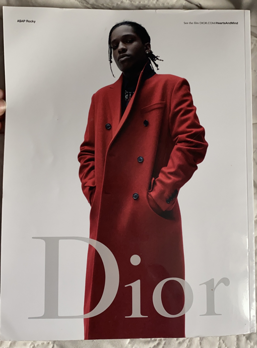
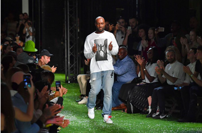
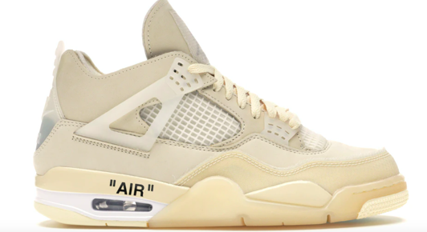
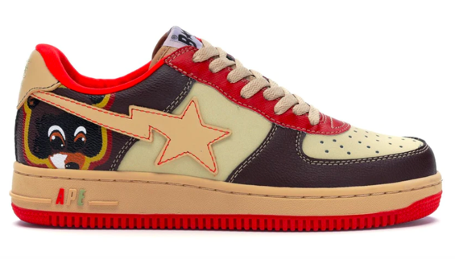
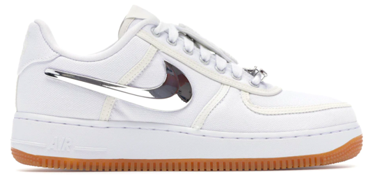

Pour les rappeurs, les
danseurs de rue et les grapheurs, la mode est très importante.
Dans leurs textes, les
rappeurs évoquent beaucoup l’argent car l’argent est très important
pour eux. Il est aussi important pour eux que les gens voient qu’ils
ont de l’argent. Le meilleur moyen qu’ils ont trouvé pour montrer
qu’ils en ont est de porter des vêtements de luxe.
Dans le début du
mouvement Hip Hop, les rappeurs gagnaient peu d’argent donc celui
qui avaient les moyens de se payer des vêtements très chers était
respecté et courtisé. Ils portaient ces vêtements de luxe d’une
autre manière que les gens aisés avaient l’habitude de les porter.
Les marques de luxe
trouvaient dans un premier temps que le fait que des jeunes
banlieusards puissent se procurer leurs vêtements était humiliant.
Petit à petit, ces marques ont pris conscience que ces jeunes
pouvaient faire monter leur popularité et se sont mises à les
contacter.

4ème
de couverture du magasine Another Man sorti en 2015 où on voit le
rappeur A$AP Rocky poser pour Dior dans un manteau rouge. Ce manteau
sera porté par Kate Middleton quelques mois après sa sortie.
Les rappeurs ont impacté
beaucoup la manière de s’habiller. Ils portent un nouveau style que
l’on appelle le streetwear et comme son nom l’indique c’est un style
de rue.
Le streetwear connaît un
énormé succès auprès des jeunes. La marque de luxe Louis Vuitton a
désigné un jeune designer Virgil Abloh comme directeur artistique de
la collection homme. Cela a fait scandale car le publique était
défavorable à l’idée que Louis Vuitton se transforme en une marque de
streetwear de luxe.
En parallèle, Virgil
Abloh a fondé sa propre marque de streetwear haut de gamme : Off
White. Off White est aujourd’hui une des marques les plus populaires
du monde avec un chiffre d’affaires de 2 632 300.00 € en 2019.

Photographie de Virgil Abloh prise le 20 juin 2018 lors de la Fashion Week de Paris pour la collection printemps/été 2019 de Off White
Tout comme les
vêtements, les paires de baskets se popularisent énormément grâce aux
rappeurs, danseurs et grapheurs qui en portent. Des marques comme
Adidas ou encore Nike voient leurs ventes augmenter à partir des
années 80.
Les marques de baskets
vont aussi se mettre à collaborer avec les rappeurs.
Défilé de la marque Yeezy pour la collection Automne 2020. Cette marque est une collaboration entre Adidas et le rappeur Kayne West. Yeezy est une marque très demandée par le jeune publique et elle est très rapidement en rupture de stock après sa sortie
Les
collaborations entre les marques de baskets et les rappeurs sont
extrêmement demandées. À la moindre sortie, les gens veulent à tout
prix pouvoir acheter cette paire rare à leurs yeux. Les chanceux qui
arrivent à avoir ces chaussures revendent parfois ces chaussures
beaucoup plus chères que le prix initial.

Jordan 4 Retro Off-White Sail sortie en 2020 est une collaboration entre deux marques : Off White et Jordan (Nike). Elle se vendait initalement à 200 euros et elle se revend à plus de 1000 euros aujourd’hui.

A
Bathing Ape Bapesta Kanye West College Dropout collaboration entre la
marque Bape et le rappeur Kayne West sortie en 2007. La paire se
vendait à l’origine une centaine d’euros mais aujourd’hui elle est
très rare et se revend jusqu’à 113 800 euros !

Nike Air Force 1 Low Travis Scott
collaboration entre Nike et le rappeur Travis Scott sortie en 2017.
Vendue à l’orgine à 150 euros, elle ss revend aujourd’hui jusqu’à 1900
euros